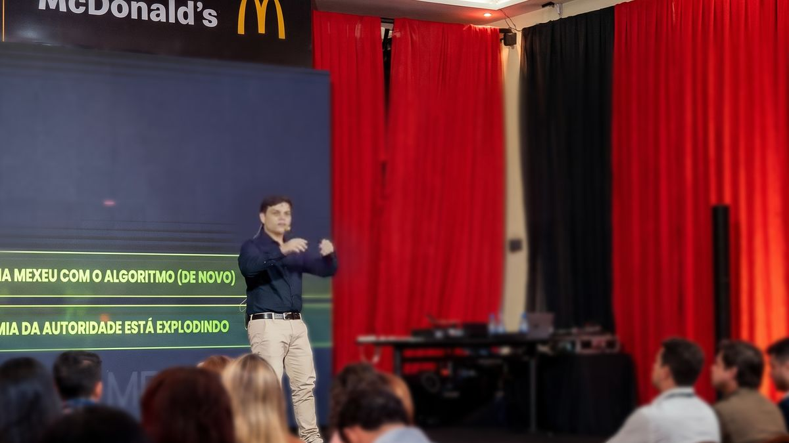

01
Palestras de alto nível
Para palestrantes e mentores que querem uma palestra-assinatura, pronta para eventos e imersões.
BRITTO* GROUP · Palestras de alto nível
Extraímos o melhor do seu conhecimento, da sua ideia e da sua história e transformamos em uma experiência cinematográfica que impacta, conecta, converte e não sai da mente do público.
Uma plateia cheia.
Centenas de olhares esperando a primeira palavra.
E no centro do palco, quem decide se eles vão lembrar é…
Palestrantes BRITTO*
Apresentações BRITTO*
O problema
Você tem resultado, história e repertório. Mas no palco, isso nem sempre aparece.
Os primeiros minutos passam com agradecimentos e currículo. Quando o conteúdo começa, a plateia já está no celular.
Textos longos, imagens genéricas e um visual que não está à altura de quem você é.
A palestra termina sem um momento marcante. O público aplaude, sai e não lembra do que ouviu.
Para quem é
Empresário aprende com empresário. Trabalhamos com quem tem resultado de verdade e quer que o palco mostre isso.
Quem é
Fundador da BRITTO* GROUP. Gabriel criou a BRITTO* para que quem tem conhecimento de verdade também brilhe no palco: tirar a grande ideia da cabeça do expert e transformar em uma apresentação que o público não esquece.

Método C.N.V.
Organizamos o que você sabe: a grande ideia, os argumentos e as provas que sustentam a sua fala.
Transformamos o conteúdo em um roteiro, com começo, virada e fechamento.
Slides, vídeos e telões que trabalham a favor da sua fala, e não contra ela.
Três mentorias separadas, com material didático exclusivo da BRITTO*. No palco, quem brilha é você.
Quero as mentorias →Formatos
Do auditório lotado à sala de reunião com três investidores: cada palco pede uma direção diferente.
Para palestrantes e mentores que querem uma palestra-assinatura, pronta para eventos e imersões.
Para empresários que precisam convencer investidores, parceiros ou grandes clientes em poucos minutos.
Entradas com vídeo, trilha e efeito ao vivo para convenções e eventos de empresa.
A linguagem de shows e musicais aplicada a imersões e eventos empresariais.
Cases
Rodrigo Omena falou sobre redes sociais e tráfego para advogados contando a palestra inteira como um caso policial.
Abertura com o tema De Volta para o Futuro para celebrar a trajetória da empresa.
Apresentação de pitch para o franqueado Juan Campos, estruturada com as três mentorias do método C.N.V.
Matriz de Genialidade
Responda a quatro perguntas e veja qual repertório você já tem para criar uma palestra, um curso, uma mentoria ou uma consultoria. Todo negócio tem potencial para ter um braço educacional.
Esta é uma versão de demonstração. A Matriz completa é aplicada pelo time da BRITTO*.
Perguntas frequentes
Não. Muitos experts chegam só com o conhecimento e a história. A Mentoria de Conteúdo organiza tudo do zero.
Sim. As mentorias de Conteúdo, Narrativa e Visual são separadas. Indicamos as três quando a palestra ainda não existe.
Sim. Já temos palestrantes BRITTO* em Manaus, São Paulo, Salvador, Japão e China. As mentorias podem ser online.
Funciona. As mentorias C.N.V. valem para qualquer apresentação, de um pitch de dez minutos a uma convenção inteira.
Depende do formato e da data do evento. No diagnóstico, montamos o cronograma junto com você, de trás para frente a partir do dia do palco.
Conte pra gente. A BRITTO* cuida para ele ser inesquecível.
WhatsApp (92) 99121-8255 · Edifício ZEN.WORK, 3º andar · Rua Rio Javari, 361 · Manaus, AM